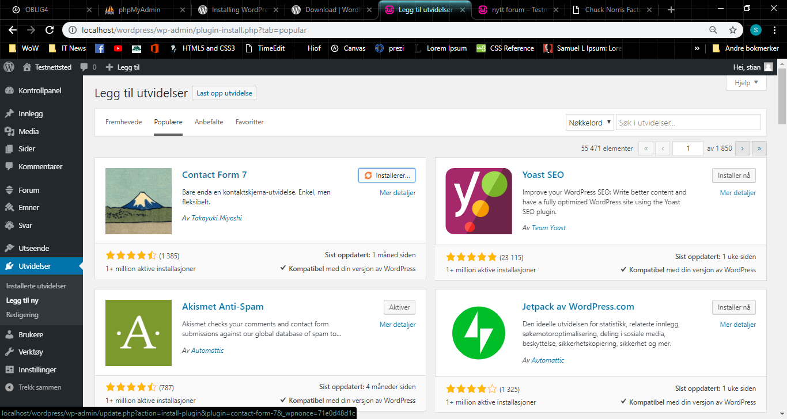

Nedenfor beskriver jeg prosessen med å sette opp og teste WordPress. Jeg testet
dette på en WAMP server. Bildene kan trykkes på for å se de i full størrelse.
Etter å ha installert en WAMP server, er det mulig å lage en database til
WordPress ved å skrive "localhost/phpmyadmin" i nettleserens adressefelt. Standard brukernavn og passord
er henholdsvis "root" og "" (altså ingen passord).
For å lage en database til WordPress, trykk på "Databaser".
Skriv navn på databasen, eksempelvis "wordpress", og trykk "opprett". Nå er databasen opprettet.
Pakk ut wordpress-mappen til root. I mitt tilfelle var dette "C:\wamp64\www".
Nå kan installasjonen av WordPress-siden starte. Gå til "localhost/wordpress" og velg språk.
På dette steget får jeg litt informasjon om hva jeg trenger for å fullføre installasjonen, samt
hva som kan gjøres hvis prosessen er misslykket.
Her prøver jeg å logge på med bruker og passord til databasen jeg opprettet til WordPress.
Her får jeg beskjed om at config filen allerede finnes. Jeg får også beskjed om at løsningen er å
slette filen og prøve på nytt.
Etter å ha slettet filen, må jeg velge språk på nytt.
Det fungerte! Her får jeg velge navn på nettstedet, samt brukernavn, passord og epost-adresse.
Suksess! Brukeren til WordPress-siden er nå opprettet.
Jeg får nå logge inn på WordPress-siden.
Den autogenererte testsiden vises.
For å finne temavelgeren, hovre over navnet på nettstedet i øverste venstre hjørne og velg kontrollpanel.
Velg så "Utseende" og "temaer" i undermenyen og trykk på "legg til".
Her går det ann å søke etter et bestemt tema, eller se igjennom populære temaer. Når du har funnet et tema,
trykk på "installer" og "aktiver" for å bytte til det nye temaet.
Mange temaer kommer med utvidet funksjonalitet ved å tilby tilhørende utvidelser (plugins). Her får jeg tilbud
om å installere "Orbid Fox Companion", noe jeg velger å ikke gjøre.
Her kan jeg bytte bakgrunnsbilde i headeren, endre tittel, tekst, tekst på knapp og hvilken url knappen skal
linke til.
Her tester jeg å legge til en widget.
Her tester jeg en annen widget.
Her tester jeg en plugin som heter bbPress og som brukes til å lage forum.
Trykk på "Nytt forum" for å opprette et nytt forum.
Nytt forum om Chuck Norris!

Her installer jeg en ny plugin, Contact Form 7. Dette er en ganske engel plugin som kan lage kontaktskjemaer
som du engelt plasserer på siden med en type link.
Ferdig kontaktskjema!
Chuck Norris artikkel med fremhevet bilde.
Samuel L Jackson artikkel med fremhevet bilde.
Forside med fremhevet bilde.
Kontaktside med fremmhevet bilde og kontaktskjema.
Infoside med dummy-tekst (bacon!) og fremmhevet bilde.
Dette er hvordan forsiden ser ut med sidepanelet.
{kind=link}
{kind=link}
{kind=link}
{kind=link}
{kind=link}
{kind=link}
{kind=link}
{kind=link}
{kind=link}
{kind=link}
{kind=link}
{kind=link}
{kind=link}
{kind=link}
{kind=link}
{kind=link}
{kind=link}
{kind=link}
{kind=link}
{kind=link}
{kind=link}
{kind=link}
{kind=link}
{kind=link}
{kind=link}
{kind=link}
{kind=link}
{kind=link}
{kind=link}
{kind=link}